TRADUCCIÓN Y ADAPTACIÓN DE UN CUESTIONARIO SOBRE ENTORNOS DE APRENDIZAJE DE LAS MATEMÁTICAS EN EL HOGAR
Versión final del cuestionario
Si tienes a tu cuidado niños de entre 3 y 8 años y deseas colaborar contestando la encuesta, puedes acceder a la misma utilizando este link http://tiny.cc/AprendizajeEnHogar
Si, por otro lado, te interesa utilizarla para un trabajo propio, puedes descargar las preguntas completas en el siguiente link: https://zenodo.org/record/7986289#.ZHYA8HZBzIU
Para citar el cuestionario validado: Formoso, J., Ortiz, S., Errico, C. (2023). Traducción y adaptación de un cuestionario sobre entornos de aprendizaje de las matemáticas en el hogar [Poster]. 3er Congreso Nacional, 1er Congreso Internacional de Psicología de la Facultad de Psicología, Universidad Nacional de San Luis, San Luis, Argentina. Doi: 10.5281/zenodo.7986364
Introducción
Los niños y niñas cuentan con habilidades matemáticas de aparición temprana desde sus primeros años de vida, como la estimación y discriminación de cantidades, el conteo y el reconocimiento de arábigos. Estas se encuentran en la base de la adquisición de habilidades más complejas, asociadas tradicionalmente a la educación formal (Kleemans, Peeters, Segers, & Verhoeven, 2012; Purpura, Hume, Sims, & Lonigan, 2011). Sin embargo, diversos estudios sugieren que las experiencias informales desarrolladas en el entorno familiar influyen sobre la adquisición posterior de habilidades matemáticas y, por consiguiente, sobre rendimiento académico (LeFevre et al., 2009; Segers, Kleemans, & Verhoeven, 2015). La cantidad y calidad de tiempo de interacción entre las personas cuidadoras y los/as niños/as, los recursos materiales utilizados, las expectativas que madres y padres tienen sobre los logros académicos de sus hijos e hijas, pueden influir sobre la generación de aprendizajes significativos.
Objetivo del presente trabajo
Debido a que estudios previos han detectado efectos del contexto hogareño de aprendizaje sobre el desarrollo de las habilidades matemáticas en niños resulta de interés contar con un instrumento adaptado a la población local que permita objetivar la medición de esta variable. Luego de una búsqueda bibliográfica extensa, seleccionamos un cuestionario publicado en LeFevre et al. (2009). El mismo fue traducido al español por tres profesionales independientes, luego se realizó una puesta en común y síntesis, se retradujo al inglés y se evaluó la concordancia entre la versión final y la original. Finalmente, se realizó un estudio para evaluar su validez y fiabilidad. A continuación se describe ese proceso.
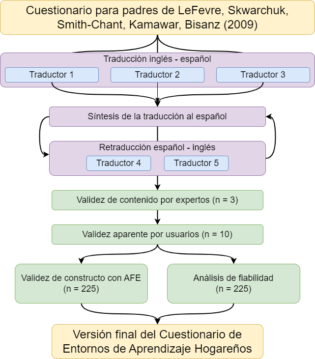
Descripción de los participantes
Los siguientes datos corresponden a un cuestionario completado por madres, padres y personas cuidadoras de niños y niñas de entre 3 y 8 años de edad. Los datos fueron recabados entre el 01/02/2023 y 31/01/2023. Incluye respuestas de 225 participantes. De las personas cuidadoras el 90.2% es de género femenino y 9.8% de género masculino, con una edad promedio de 38.71 (DE = 6.16). Sus respuestas correspondieron a 48 % de niñas y 52 % de niños, con una edad en meses promedio de 71.28 (DE = 21.55). De los niños y niñas sobre los que se respondió el cuestionario, 1.3% tenían alteraciones sensoriales (daltonismo e hipoacusia) y 4.9% dificultades del aprendizaje o de adquisición del lenguaje.
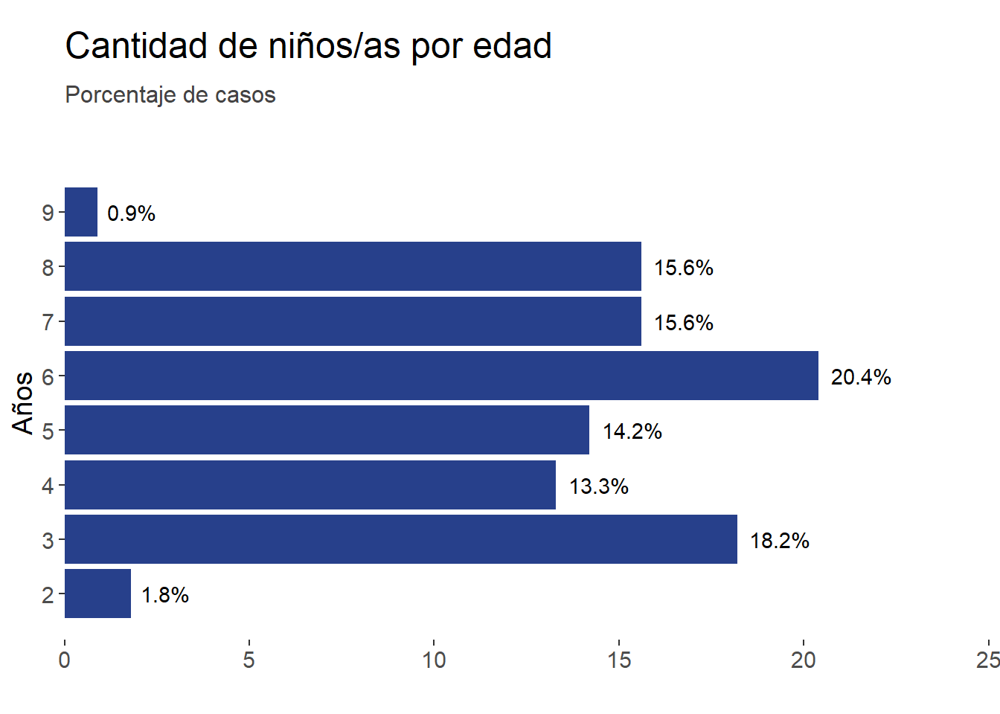
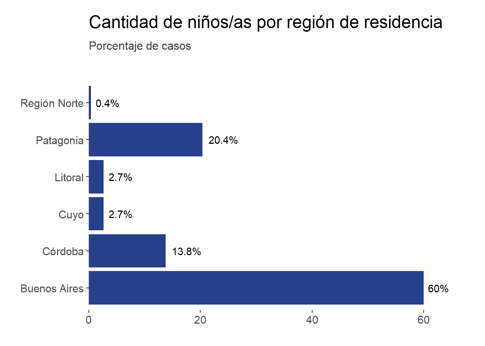
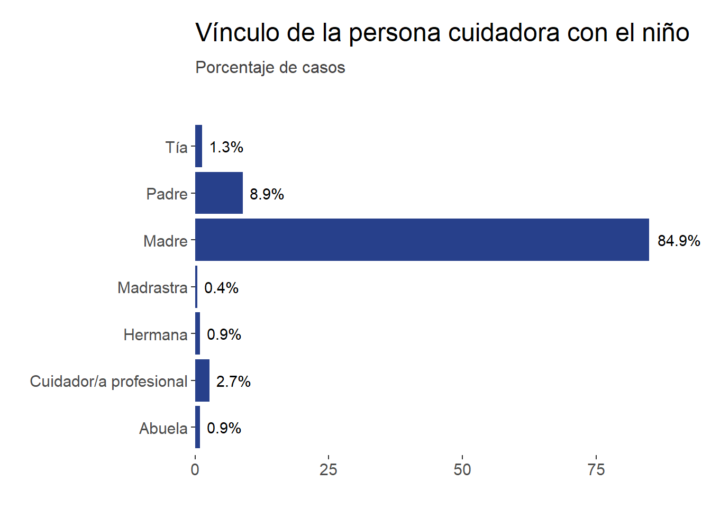
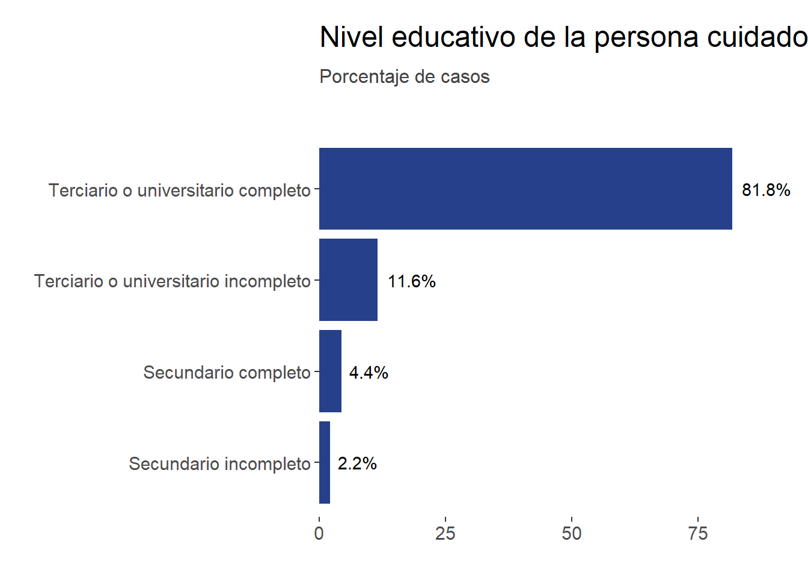
Descripción de las respuestas a los ítems
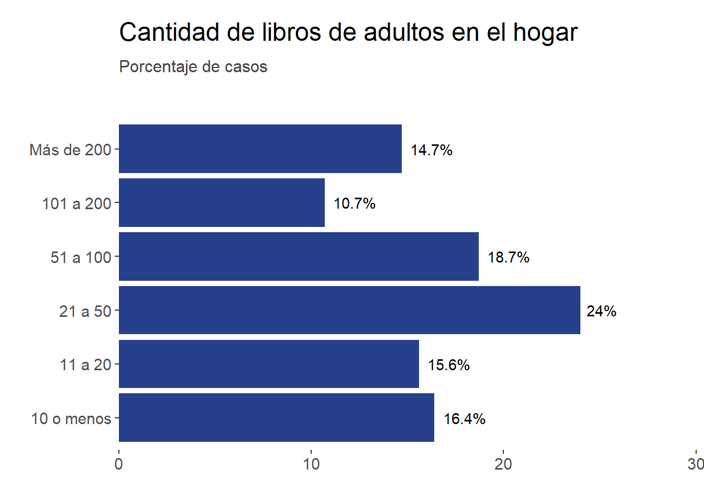
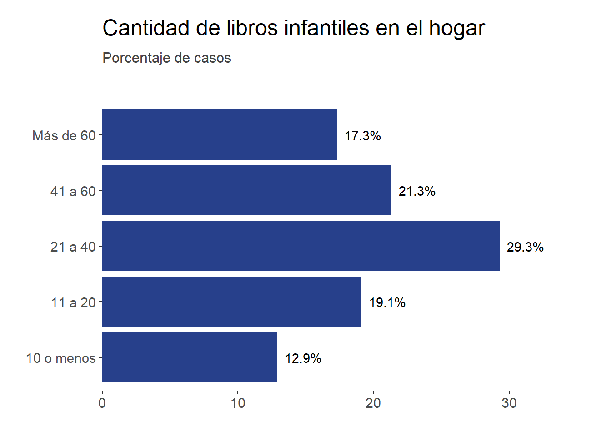
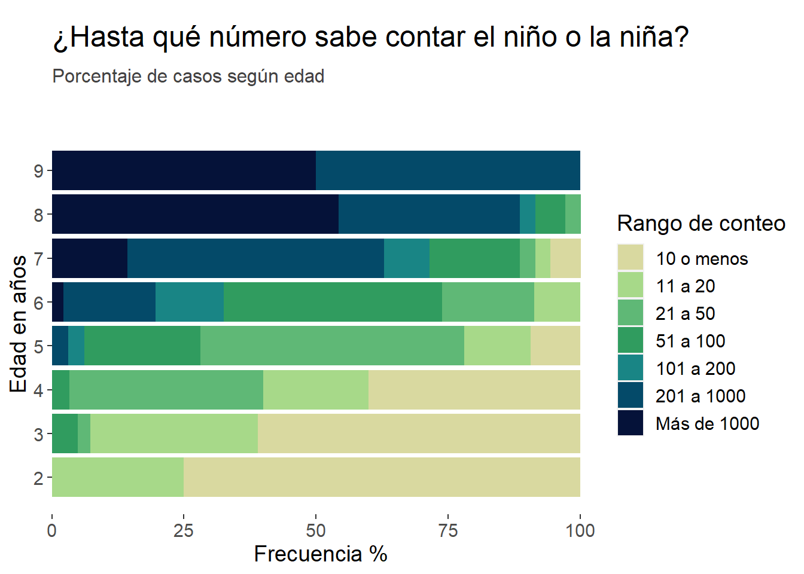
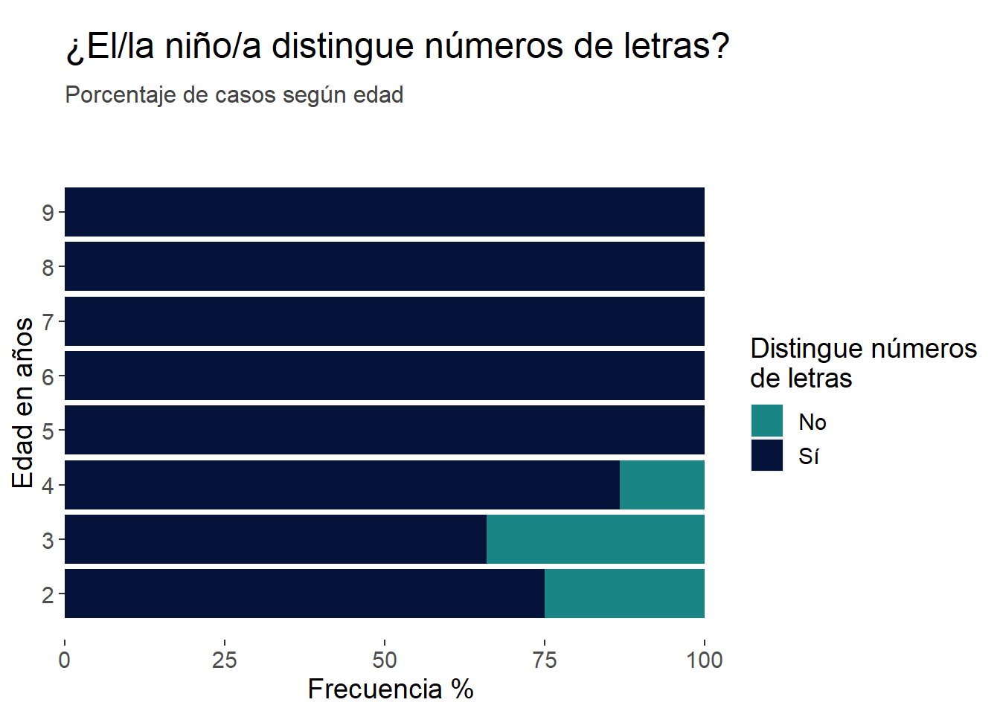
En tu opinión, ¿qué tan importante considerás que es para un niño alcanzar los siguientes objetivos antes de ingresar al sala de 4 en el jardín?
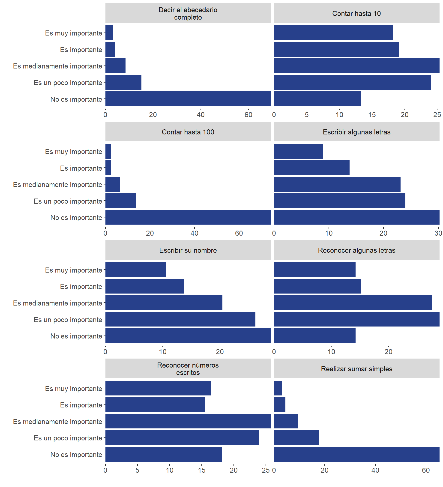
En el mes pasado, ¿con qué frecuencia realizaron las siguientes actividades vos y el/la niño/a?
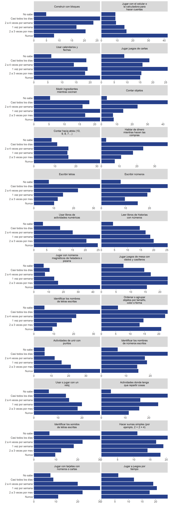
Por favor, leé las siguientes afirmaciones e indicá el grado en que estás de acuerdo con cada afirmación marcando la opción correspondiente.
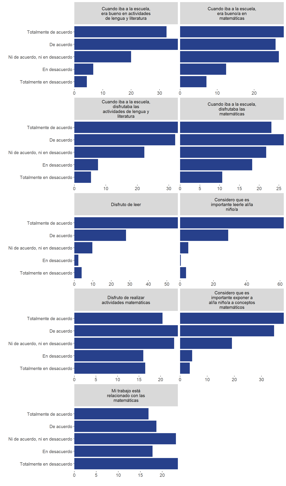
Validez y fiabilidad
Validez de contenido por juicio de expertos
Se constituyó un panel de 3 expertas en la temática con 25 años de experiencia en promedio para evaluar la validez de contenido de la versión descrita previamente, resultado de la traducción y adaptación de los ítems. Para ello, cada una respondió un cuestionario en el que debían puntuar la claridad, relevancia y coherencia de cada ítem y la suficiencia del conjunto de ítems para describir el constructo utilizando una escala Likert de 4 puntos (1. No cumple con el criterio, 2. Nivel bajo, 3. Nivel moderado, 4. Nivel alto). Se realizaron dos iteraciones. En la primera, se evaluaron el nivel de acuerdo entre las expertas utilizando el coeficiente AC1 de Gwet. Se modificaron aquellos ítems con un nivel bajo de acuerdo (0.67 o menor) y/o con puntajes bajos de coherencia, claridad o relevancia (puntaje 1 o 2). Se agregaron ítems sugeridos por las expertas para alcanzar un nivel de suficiencia alta. En la segunda iteración, la versión final del cuestionario obtuvo niveles de acuerdo altos y puntajes moderados o altos para todas las medidas de calidad. Se calculó un índice de validez de contenido de 1 (100%) (Yusoff, 2019a).
Validez aparente
Para evaluar la validez aparente se administró la versión final a un grupo de 10 personas cuidadoras de niños o niñas de entre 3 y 8 años que asignaron puntajes de 1 o 0 a cada uno de los ítems para indicar si estos resultaban claros y comprensibles. Se realizó una entrevista final para evacuar posibles dudas. Se calculó un índice de validez aparente total de 0.98 (Yusoff, 2019b), donde los índices asociados a los ítem se encuentran entre 0.70 y 1.
Validez de constructo con análisis factorial exploratorio
Inicialmente, se obtuvo la matríz de correlaciones entre los ítems de la escala (coeficiente de Spearman).
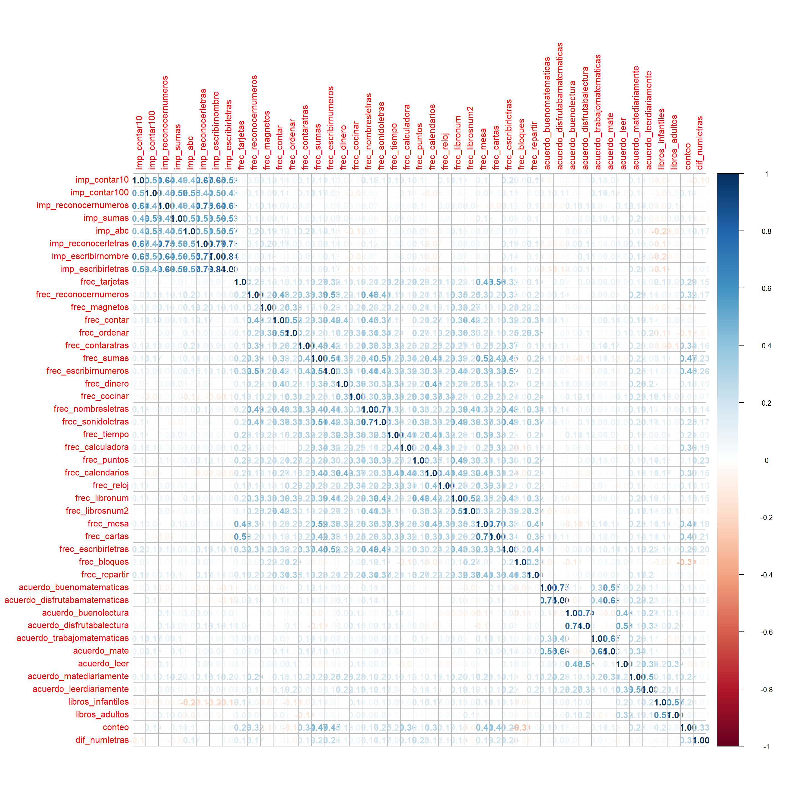
Para evaluar la adecuación de un análisis factorial, se calculó la medida de adecuación muestral Kaiser-Mayer-Olkin (KMO) (kmo) y la prueba de esfericidad de Bartlett \(\chi^2_{990}\) = 5136.46, p < .001. En ambos casos los resultados sugieren que los datos son adecuados para realizar un análisis factorial.
Luego, para identificar la cantidad de factores a extraer, se realizó un análisis paralelo.
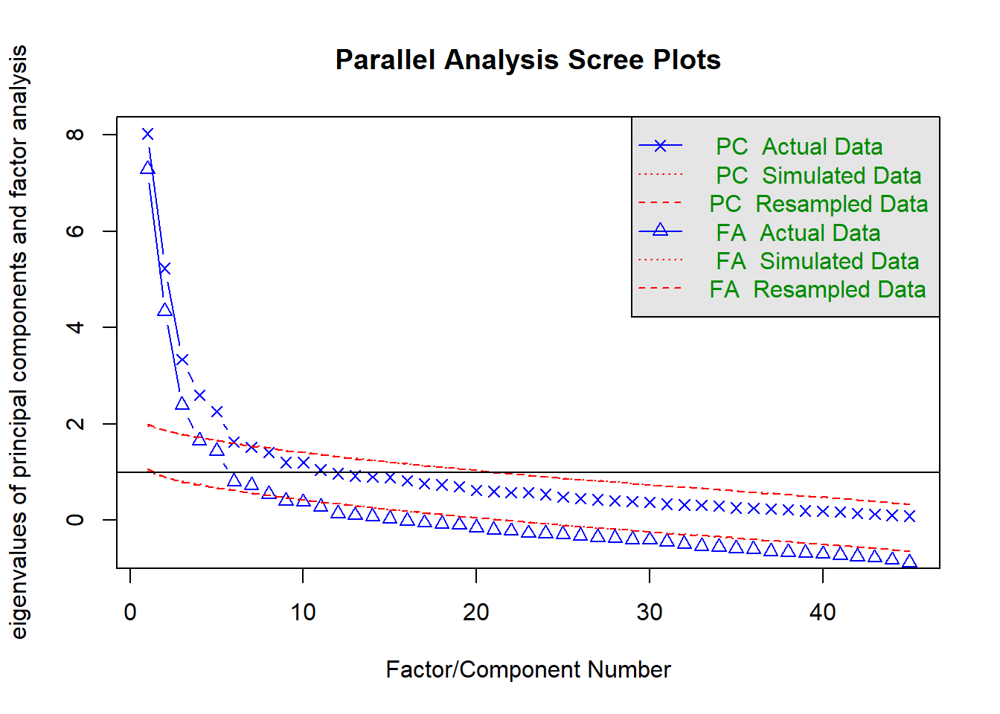
Parallel analysis suggests that the number of factors = 7 and the number of components = 5 Puede observarse que hay un punto de inflexión en los datos a partir de 4 o 5 componentes. El resultado de 4 factores mostró un mejor ajuste a los datos por lo que retuvimos finalmente esta solución. Se utilizó como método de rotación varimax, y mínimo residuo como método de estimación. Se eliminaron aquellos ítems con cargas factoriales menores a 0.40 o que carguen en más de un factor, estos son:
- Cantidad de libros de adultos disponibles en el hogar.
- Cantidad de libros infantiles disponibles en el hogar.
- Si el/la niño/a diferencia números de letras.
- Frecuencia con que la persona cuidadora y el/la niño/a juegan con bloques.
- Frecuencia con que la persona cuidadora y el/la niño/a juegan con números magnéticos.
- El nivel de acuerdo de la persona cuidadora con la necesidad de practicar matemáticas en el hogar cotidianamente.
A continuación se muestran las cargas factoriales para cada ítem y la proporción de varianza explicada por cada factor en la versión final del cuestionario.
Loadings:
MR1 MR2 MR3 MR4
imp_contar10 0.717
imp_contar100 0.708
imp_reconocernumeros 0.771
imp_sumas 0.725
imp_abc 0.717
imp_reconocerletras 0.845
imp_escribirnombre 0.864
imp_escribirletras 0.884
frec_tarjetas 0.429
frec_reconocernumeros 0.495
frec_contar 0.469
frec_ordenar 0.420
frec_contaratras 0.488
frec_sumas 0.667
frec_escribirnumeros 0.628
frec_dinero 0.490
frec_cocinar 0.497
frec_nombresletras 0.615
frec_sonidoletras 0.680
frec_tiempo 0.543
frec_calculadora 0.420
frec_puntos 0.492
frec_calendarios 0.609
frec_reloj 0.478
frec_libronum 0.635
frec_librosnum2 0.517
frec_mesa 0.665
frec_cartas 0.563
frec_escribirletras 0.584
frec_repartir 0.481
acuerdo_buenomatematicas 0.729
acuerdo_disfrutabamatematicas 0.842
acuerdo_buenolectura 0.821
acuerdo_disfrutabalectura 0.823
acuerdo_trabajomatematicas 0.563
acuerdo_mate 0.815
acuerdo_leer 0.701
acuerdo_leerdiariamente 0.570
MR1 MR2 MR3 MR4
SS loadings 6.620 5.050 2.478 2.349
Proportion Var 0.174 0.133 0.065 0.062
Cumulative Var 0.174 0.307 0.372 0.434